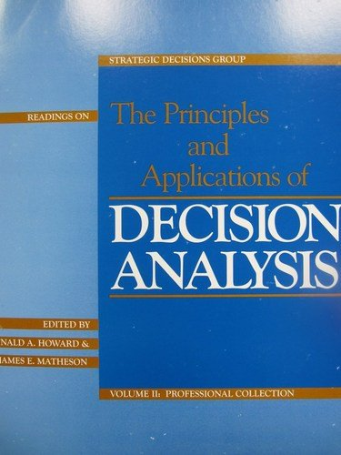

| ||
Blue BooksThe Principles and Applications of Decision Analysis The full collection can also be purchased on Amazon. Click to View on Amazon Foreword Since the term "Decision Analysis" was coined in 1963 (see paper #4 below), both its theory and practice have developed profusely. Stanford University has been a center for the intellectual development of decision analysis and the catalyst for its extensive application. Consultants associated with Stanford, many of them graduates of the Engineering-Economic Systems Department, have accumulated hundreds of man-years of experience. This collection is intended to portray the "Stanford School of Decision Analysis," as viewed by the editors. Because the Stanford decision analysis community has the broadest base of practical experience, we believe these papers represent the most successful methods of dealing with decision problems. We have not attempted to represent alternative approaches or to enter into any debate of their relative merits. We have, however, included a few papers from other fields, notably psychology, that have had, and are having, a significant impact on the practice of decision analysis. In these two volumes, we have collected papers on both the theory and application of decision analysis. Although most of these readings have been published elsewhere, we have added a few unpublished papers to represent recent developments.* The first volume is designed to be accessible to a general readership and contains; introductory papers and descriptions of actual applications. Applications to corporate strategic decisions are necessarily disguised and underrepresented because of their proprietary nature. The second volume is designed for the professional student of decision analysis. In addition to containing professional and technical papers, it contains some papers discussing recent developments in methodology for approaching health and safety problems. While papers in this volume use technical terminology, many of their ideas will be understandable to anyone. * Where possible, we have indicated authors' current affiliations on the title page of each paper. Affiliation references appearing within the text are taken from the original publication and, therefore, may vary from those on the title pages. VOLUME I: GENERAL COLLECTION What is Decision Analysis? When this nationally syndicated cartoon (image of man telling child on lap "Today, I'm going to tell you all you'll need to know about 'decision analysis.'") appeared in 1982, decision analysis had clearly become a common term. In common usage, however, the term has lost precision. By decision analysis, we mean a discipline comprising the philosophy, theory, methodology, and professional practice necessary to formalize the analysis of important decisions. Decision analysis includes procedures and methodology for assessing the real nature of a situation in which a decision might be made, for capturing the essence of that situation in a formal but transparent manner, for formally "solving" the decision problem, and for providing insight and motivation to the decision-makers and implementers. Confusing the tools of decision analysis with decision analysis itself has contributed to the loss of precision. Because uncertainty is at the heart of most perplexing decision problems, decision analysts frequently use specialized tools, such as decision tree techniques, to evaluate uncertain situations. Unfortunately, many people, some of them educators, have confused decision analysis with decision trees. This is like confusing surgery with the scalpel. Although decision tree techniques are extremely useful in solving problems where uncertainty is critical, in a real decision analysis, most of the effort and creativity is focused on finding and formulating the correct problem and on interpreting the results rather than on performing computations. INTRODUCTION AND OVERVIEW Preface These papers describe the philosophy and methodology of decision analysis. "The Evolution of Decision Analysis" was written especially for this collection to show the progress in the field. It describes the continuing development of the decision analysis cycle and of the process for capturing the three elements of any decision problem -- values, alternatives, and information -- in formal, but practical, decision models. "An Introduction to Decision Analysis" extensively discusses the principles and practice of decision analysis and describes the original decision analysis cycle, which was updated in the previous paper. "Decision Analysis in Systems Engineering," originally presented as a lecture, provides a non-technical discussion of the basic principles and techniques developed from them. The paper discusses the nature of decisions, the relation of rational decision-making to mental health, and its applications to medical and social decisions.& It also includes a transcript of a question period with some interesting exchanges. "Decision Analysis: Applied Decision Theory" introduced the term decision analysis when the paper was presented at a conference in 1965. It describes the earliest version of the decision analysis cycle and one of its first extensive applications to a major problem. "A Tutorial Introduction to Decision Theory" presents an entertaining example of the theory for treating decisions in the face of uncertainty, which is a cornerstone of decision analysis, and focuses on decision theory as a way of formalizing common sense. "A Tutorial in Decision Analysis" illustrates the principles and practice of decision analysis by discussing an analysis of a major capital investment decision. It shows how to treat ecological and regulatory issues and how to use value of perfect information calculations. "The Science of Decision-Making" is an approachable statement of the logical foundations of decision analysis. The paper discusses the barriers to logical thought that had to be surmounted, and the developments required, to create a science of rationality. "An Assessment of Decision Analysis" is a fairly recent critique of the usefulness and limitations of decision analysis, which, in particular, questions the ethics of using decision analysis in social situations where individuals are involuntarily subjected to the result. 1. The Evolution of Decision Analysis - R. A. Howard Click here for full text. Abstract: Although decision analysis has developed significantly over the last two decades, the basic principles of the field have served well. They are unlikely to change because they are based on simple logic. In the first part of this paper, we summarize the original, fundamental disciplines of decision analysis; in the second part, we show how the discipline has evolved. 2. An Introduction to Decision Analysis - J. E. Matheson and R. A. Howard 3. Decision Analysis in Systems Engineering - R. A. Howard 4. Decision Analysis: Applied Decision Theory - R. A. Howard 5. A Tutorial introduction to Decision Theory - D. W. North 6. A Tutorial in Decision Analysis - C. S. Staël von Holstein 7. The Science of Decision-Making - R. A. Howard 8. An Assessment of Decision Analysis - R. A. Howard
APPLICATIONS Preface Investment and Strategic Planning 9. Decision Analysis Practice: Examples and Insights - J. E. Matheson 10. Decision Analysis of a Facilities Investment and Expansion Problem - C S. Spetzler and R. M. Zamora 11. Strategic Planning in an Age of Uncertainty - M. M. Menke 12. A Decision Analysis of a Petrochemical Expansion Study - T.J. Braunstein 13. The Dangerous Quest for Certainty in Market Forecasting - R. Abt, M. Borja, M. M. Menke, and J. P. Pezier 14. An inside View: Analyzing investment Strategies - R. F. Egger and M. M. Menke 15. Managing the Corporate Business Portfolio - J. E. Matheson Research and Development 16. Overview of R&D Decision Analysis - J. E. Matheson 17. Using Decision Analysis to Determine R&D's Value Article from Inside R&D 18. Selecting Projects to Obtain a Balanced Research Portfolio - D. L Owen 19. Calling the Shots in R&D - H. U. Balthasar, R. A. A. Boschi, andM. M. Menke 20. Quantifying and Forecasting Exploratory Research Success - R. A. A. Boschi, hi. U. Balthasar, and M. M. Menke 21. Evaluating Basic Research Strategies - M. M. Menke, J. Celzer, and J. P. Pezier Social Policy 22. Social Decision Analysis - R. A. Howard 23. The Decision to Seed Hurricanes - R. A. Howard, J. E. Matheson, and D. W. North 24. Decision Analysis of the Synthetic Fuels Commercialization Program - S. N. Tani 25. Decision Analysis of Space Projects: Voyager Mars - J. E. Matheson and W. J. Roths
VOLUME II: PROFESSIONAL COLLECTION HEALTH AND SAFETY Preface 26. On Making Life and Death Decisions - R. A. Howard 27. The Value of Life and Nuclear Design - D. L Owen, J. £ Matheson, and R. A. Howard 28. The Design of Hazardous Products - D. L Owen 29. On Being Environmentally Decisive - P. A. Owen and S. B. Engle 30. On Fates Comparable to Death - R. A. Howard PROFESSIONAL PRACTICE Preface 31. The Foundations of Decision Analysis - R. A. Howard 32. The Difficulty of Assessing Uncertainty - E. C. Capen SDP does not currently have authorization to post the full text of this article. Visit the OnePetro website for information about purchasing. Abstract: What do you do when uncertainty crosses your path? Though it seems that we have been taught how to deal with a determinate world, recent testing indicates that many have not learned to handle uncertainty successfully. This paper describes the results of that testing and suggests a better way to treat the unknown. Citation: Capen, E.C. (1976). The Difficulty of Assessing Uncertainty. Journal of Petroleum Technology, Vol. 28, No. 8, pp. 843-850. 33. Probability Encoding in Decision Analysis - C. S. Spetzler and C. 5. Stael von Holstein SDP does not currently have authorization to post the full text of this article. Visit the INFORMS website for information about the full text version. Abstract: This paper presents the present philosophy and practice used in probability encoding by the Decision Analysis Group at Stanford Research Institute. Probability encoding, the process of extracting and quantifying individual judgment about uncertain quantities, is one of the major functions required in the performance of decision analysis. The paper discusses the setting of the encoding process, including the use of sensitivity analyses to identify crucial state variables for which extensive encoding procedures are appropriate. The importance of balancing modeling and encoding techniques is emphasized and examples of biases and unconscious modes of judgment are reviewed. A variety of encoding methods are presented and their applicability is discussed. The authors recommend and describe a structured interview process that utilizes a trained interviewer and a number of techniques designed to reduce biases and aid in the quantification of judgment. Citation: Carl S. Spetzler, Carl-Axel S. Staël Von Holstein, (1975) Exceptional Paper—Probability Encoding in Decision Analysis. Management Science 22(3):340-358.
34. Risk Preference - R. A. Howard
35. The Development of a Corporate Risk Policy for Capital Investment Decisions - C. S. Spetzler
36. The Used Car Buyer - R. A. Howard
37. Influence Diagrams - R. A. Howard and J. E. Matheson
Click here for full text.
Abstract: The subject of this paper is a new form of description, the influence diagram, that is at once both a formal description of the problem that can be treated by computers and a representation easily understood by people in all walks of life and degrees of technical proficiency. It thus forms a bridge between qualitative description and quantitative specification. 38. The Use of Influence Diagrams in Structuring Complex Decision Problems - D. L Owen TECHNICAL CONTRIBUTIONS Preface 39. Information Value Theory - R. A. Howard 40. Value of Information Lotteries - R. A. Howard 41. The Economic Value of Analysis and Computation - J. E. Matheson 42. Competitive Bidding in High-Risk Situations - E. C. Capen, R. V. Clapp, and W. M. Campbell 43. Decision Analysis: Perspectives on Inference, Decision, and Experimentation - R. A. Howard 44. Bayesian Decision Models for Systems Engineering - R. A. Howard 45. Proximal Decision Analysis - R. A. Howard 46. Risk-Sensitive Markov Decision Processes - R. A. Howard CONTRIBUTIONS FROM PSYCHOLOGY Preface 47. Judgment Under Uncertainty: Heuristics and Biases - A. Tversky and D. Kahneman SDP does not currently have authorization to post the full text of this article. Visit the Science website for information about purchasing. Abstract: This article described three heuristics that are employed in making judgments under uncertainty: (i) representativeness, which is usually employed when people are asked to judge the probability that an object or event A belongs to class or process B; (ii) availability of instances or scenarios, which is often employed when people are asked to assess the frequency of a class or the plausibility of a particular development; and (iii) adjustment from an anchor, which is usually employed in numerical prediction when a relevant value is available. These heuristics are highly economical and usually effective, but they lead to systematic and predictable errors. A better understanding of these heuristics and of the biases to which they lead could improve judgments and decisions in situations of uncertainty. Citation: Tversky, A. and Kahneman, D. (1974). Judgment Under Uncertainty: Heuristics and Biases. Science, New Series, Vol. 185, No. 4157. (Sep. 27, 1974), pp. 1124-1131. 48. Prospect Theory: An Analysis of Decision Under Risk - D. Kahneman and A. Tversky SDP does not currently have authorization to post the full text of this article. Visit the Econometrica website for information about purchasing. Abstract: This paper presents a critique of expected utility theory as a descriptive model of decision making under risk, and develops an alternative model, called prospect theory. Choices among risky prospects exhibit several pervasive effects that are inconsistent with the basic tenets of utility theory. In particular, people underweight outcomes that are merely probable in comparison with outcomes that are obtained with certainty. This tendency, called the certainty effect, contributes to risk aversion in choices involving sure gains and to risk seeking in choices involving sure losses. In addition, people generally discard components that are shared by all prospects under consideration. This tendency, called the isolation effect, leads to inconsistent preferences when the same choice is presented in different forms. An alternative theory of choice is developed, in which value is assigned to gains and losses rather than to final assets and in which probabilities are replaced by decision weights. The value function is normally concave for gains, commonly convex for losses, and is generally steeper for losses than for gains. Decision weights are generally lower than the corresponding probabilities, except in the range of low probabilities. Overweighting of low probabilities may contribute to the attractiveness of both insurance and gambling Citation: Kahneman, D. and Tversky, A. (1979). Prospect Theory: An Analysis of Decision Under Risk. Econometrica, Vol. 47, Issue 2. (March 1979), pp. 263-292. 49. The Framing of Decisions and the Psychology of Choice - A. Tversky and D. Kahneman SDP does not currently have authorization to post the full text of this article. Visit the Science website for information about purchasing. Abstract: The psychological principles that govern the perception of decision problems and the evaluation of probabilities and outcomes produce predictable shifts of preference when the same problem is framed in different ways. Reversals of preference are demonstrated in choices regarding monetary outcomes, both hypothetical and real, and in questions pertaining to the loss of human lives. The effects of frames on preferences are compared to the effects of perspectives on perceptual appearance. The dependence of preferences on the formulation of decision problems is a significant concern for the theory of rational choice. Citation: Tversky, A. and Kahneman, D. (1981). The Framing of Decisions and the Psychology of Choice. Science, New Series, Vol. 211, No. 4481. (Jan. 30, 1981), pp. 453-458. | ||